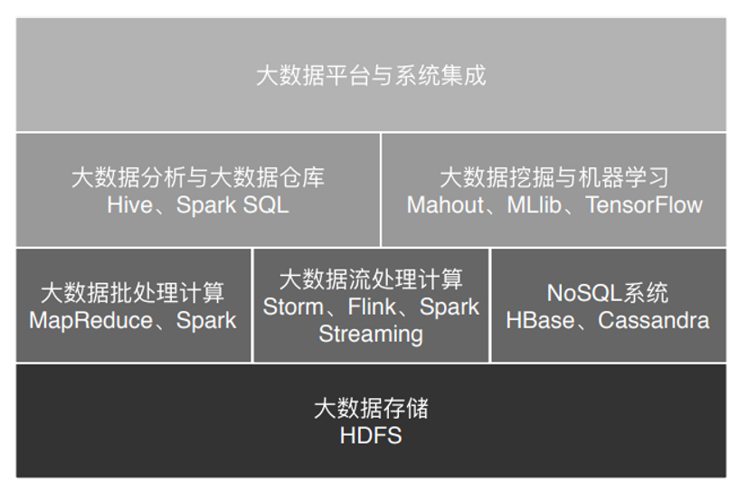
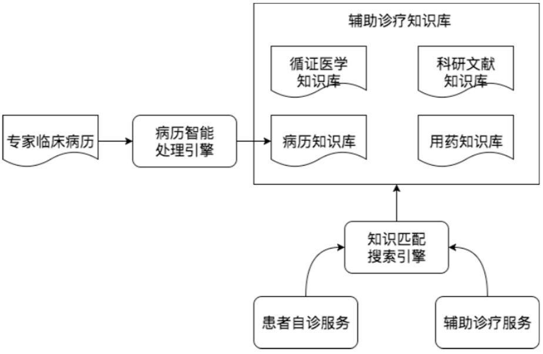

0. 前言
大数据技术发展史
论文奠定技术发展基石
业务催生技术不断突破
效率倒逼技术迭代更新
今天我们常说的大数据技术，其实起源于 Google 在 2004 年前后发表的三篇论文，也就是我们经常听到的“三驾马车”，分别是分布式文件系统 GFS、大数据分布式计算框架 MapReduce 和 NoSQL 数据库系统 BigTable。
搜索引擎主要就做两件事情，网页抓取和索引构建，而在这个过程中有大量的数据需要存储和计算。这“三驾马车”其实就是用来解决这个问题的。那时，大多数公司的关注点还聚焦在单机上，在思考如何提升单机的性能，寻找更贵更好的服务器。而 Google 的思路是部署一个大规模的服务器集群，通过分布式的方式将海量数据存储在这个集群上，然后利用集群上的所有机器进行数据计算。 这样其实不需要买很多很贵的服务器，它只要把这些普通的机器组织到一起。
当时的天才程序员，也是 Lucene 开源项目的创始人 Doug Cutting 正在开发开源搜索引擎 Nutch，阅读了论文后，他非常兴奋，紧接着就根据论文原理初步实现了类似的功能。
2006 年，Doug Cutting 将这些大数据相关的功能从 Nutch 中分离了出来，然后启动了一个独立的项目专门开发维护大数据技术，这就是后来赫赫有名的Hadoop，主要包括 Hadoop 分布式文件系统 HDFS 和大数据计算引擎 MapReduce。这个纯用 Java 编写的软件其实并没有什么高深的技术难点，使用的也都是一些最基础的编程技巧，也没有什么出奇之处，但是它却给社会带来巨大的影响，甚至带动一场深刻的科技革命，推动了人工智能的发展与进步。
我们在做软件开发的时候，也可以多思考一下，我们所开发软件的价值点在哪里？真正需要使用软件实现价值的地方在哪里？你应该关注业务、理解业务，有价值导向，用自己的技术为公司创造真正的价值，进而实现自己的人生价值。而不是整天埋头在需求说明文档里，做一个没有思考的代码机器人。
Hadoop 发布之后，Yahoo 很快就用了起来。大概又过了一年到了 2007 年，百度和阿里巴巴也开始使用其进行大数据存储与计算。
2008 年，Hadoop 正式成为 Apache 的顶级项目，后来 Doug Cutting 本人也成为了 Apache 基金会的主席。自此，Hadoop 作为软件开发领域的一颗明星冉冉升起。同年，商业公司 Cloudera 成立，Hadoop 得到进一步的商业支持。
这时，Yahoo 的一些人觉得用 MapReduce 进行大数据编程太麻烦，于是便开发了 Pig。Pig 是一种脚本语言，使用类 SQL 的语法，开发者可以用 Pig 脚本描述要对大数据集上进行的操作，经过编译后会生成 MapReduce 程序，然后在 Hadoop 上运行。编写 Pig 脚本虽然比直接 MapReduce 编程容易，但是依然需要学习新的脚本语法。于是 Facebook 又发布了 Hive。Hive 支持使用 SQL 语法来进行大数据计算，Hive 会把 SQL 语句转化成 MapReduce 的计算程序。这样，熟悉数据库的数据分析师和工程师便可以无门槛地使用大数据进行数据分析和处理了。Hive 出现后极大程度地降低了 Hadoop 的使用难度，迅速得到开发者和企业的追捧。
随后，众多 Hadoop 周边产品开始出现，大数据生态体系逐渐形成，其中包括：专门将关系数据库中的数据导入导出到 Hadoop 平台的 Sqoop；针对大规模日志进行分布式收集、聚合和传输的 Flume；MapReduce 工作流调度引擎 Oozie 等。
在 Hadoop 早期，MapReduce 既是一个执行引擎，又是一个资源调度框架，服务器集群的资源调度管理由 MapReduce 自己完成。但是这样不利于资源复用，也使其非常臃肿。于是一个新项目启动了，将 MapReduce 执行引擎和资源调度分离开来，这就是 Yarn。2012 年，Yarn 成为一个独立的项目开始运营，随后被各类大数据产品支持，成为大数据平台上最主流的资源调度系统。
同样是在 2012 年，UC 伯克利 AMP 实验室开发的 Spark 开始崭露头角。当时 AMP 实验室的马铁博士发现使用 MapReduce 进行机器学习计算的时候性能非常差，因为机器学习算法通常需要进行很多次的迭代计算，而 MapReduce 每执行一次 Map 和 Reduce 计算都需要重新启动一次作业，带来大量的无谓消耗。还有一点就是 MapReduce 主要使用磁盘作为存储介质，而 2012 年的时候，内存已经突破容量和成本限制，成为数据运行过程中主要的存储介质。Spark 一经推出，立即受到业界的追捧，并逐步替代 MapReduce 在企业应用中的地位。
一般说来，像 MapReduce、Spark 这类计算框架处理的业务场景都被称作批处理计算，因为它们通常针对以“天”为单位产生的数据进行一次计算，然后得到需要的结果，这中间计算需要花费的时间大概是几十分钟甚至更长的时间。因为计算的数据是非在线得到的实时数据，而是历史数据，所以这类计算也被称为大数据离线计算。
而在大数据领域，还有另外一类应用场景，它们需要对实时产生的大量数据进行即时计算，比如对于遍布城市的监控摄像头进行人脸识别和嫌犯追踪。这类计算称为大数据流计算，相应地，有 Storm、Flink、Spark Streaming 等流计算框架来满足此类大数据应用的场景。 流式计算要处理的数据是实时在线产生的数据，所以这类计算也被称为大数据实时计算。
在典型的大数据的业务场景下，数据业务最通用的做法是，采用批处理的技术处理历史全量数据，采用流式计算处理实时新增数据。 Flink 这样的计算引擎，可以同时支持流式计算和批处理计算。
除了大数据批处理和流处理，NoSQL 系统处理的主要也是大规模海量数据的存储与访问，所以也被归为大数据技术。 NoSQL 曾经在 2011 年左右非常火爆，涌现出 HBase、Cassandra 等许多优秀的产品，其中 HBase 是从 Hadoop 中分离出来的、基于 HDFS 的 NoSQL 系统。
大数据处理的主要应用场景包括数据分析、数据挖掘与机器学习。数据分析主要使用 Hive、Spark SQL 等 SQL 引擎完成；数据挖掘与机器学习则有专门的机器学习框架 TensorFlow、Mahout 以及 MLlib 等，内置了主要的机器学习和数据挖掘算法。此外，大数据要存入分布式文件系统要有序调度 MapReduce 和 Spark 作业执行，并能把执行结果写入到各个应用系统的数据库中，还需要有一个大数据平台整合所有这些大数据组件和企业应用系统。下图中的所有这些框架、平台以及相关的算法共同构成了大数据的技术体系。

大数据应用发展史
从最开始的 Google 在搜索引擎中开始使用大数据技术，到现在无处不在的各种人工智能应用，伴随着大数据技术的发展，大数据应用也从曲高和寡走到了今天的遍地开花。Google 从最开始发表大数据划时代论文的时候，也许自己也没有想到，自己开启了一个大数据的新时代。
大数据应用的搜索引擎时代
作为全球最大的搜索引擎公司，Google 也是我们公认的大数据鼻祖，它存储着全世界几乎所有可访问的网页，数目可能超过万亿规模，全部存储起来大约需要数万块磁盘。为了将这些文件存储起来，Google 开发了 GFS（Google 文件系统），将数千台服务器上的数万块磁盘统一管理起来，然后当作一个文件系统，统一存储所有这些网页文件。Google 要构建搜索引擎，需要对所有文件中的单词进行词频统计，然后根据 PageRank 算法计算网页排名。这中间，Google 需要对这数万块磁盘上的文件进行计算处理，也正是基于这些需求，Google 又开发了 MapReduce 大数据计算框架。
在 Google 之前，世界上最知名的搜索引擎是 Yahoo。但是 Google 凭借自己的大数据技术和 PageRank 算法，使搜索引擎的搜索体验得到了质的飞跃，人们纷纷弃 Yahoo 而转投 Google。
Google 一路走来，从搜索引擎、Gmail、地图、Android、无人驾驶，每一步都将人类的技术边界推向更高的高度。而差一点的公司即使也曾经获得过显赫的地位，但是一旦失去做事的美感和节奏感，在这个快速变革的时代，陨落得比流星还快。
大数据应用的数据仓库时代
论文刚发表时，吸引的是 Yahoo 这样的搜索引擎公司和 Doug Cutting 这样的开源搜索引擎开发者。但是当 Facebook 推出 Hive 的时候，科技公司都不淡定了，他们开始意识到大数据的时代真正开启了。
曾经我们在进行数据分析与统计时，仅仅局限于数据库，在数据库的计算环境中对数据库中的数据表进行统计分析。并且受数据量和计算能力的限制，我们只能对最重要的数据进行统计和分析。这里所谓最重要的数据，通常指的都是给老板看的数据和财务相关的数据。
而 Hive 可以在 Hadoop 上进行 SQL 操作，实现数据统计与分析。也就是说，我们可以用更低廉的价格获得比以往多得多的数据存储与计算能力。我们可以把运行日志、应用采集数据、数据库数据放到一起进行计算分析，获得以前无法得到的数据结果，企业的数据仓库也随之呈指数级膨胀。
在数据仓库时代，只要有数据，几乎就一定要进行统计分析，如果数据规模比较大，我们就会想到要用 Hadoop 大数据技术，这也是 Hadoop 在这个时期发展特别快的一个原因。技术的发展同时又促进了技术应用，这也为接下来大数据应用走进数据挖掘时代埋下伏笔。
大数据应用的数据挖掘时代
大数据一旦进入更多的企业，我们就会对大数据提出更多期望，除了数据统计，我们还希望发掘出更多数据的价值，大数据随之进入数据挖掘时代。
在商业环境中，如何解读商品间的关系并不重要，重要的是它们之间只要存在关联，就可以进行关联分析，最终目的是让用户尽可能看到想购买的商品。除了商品和商品有关系，还可以利用人和人之间的关系推荐商品。如果两个人购买的商品有很多都是类似甚至相同的，不管这两个人相隔多远他们一定有某种关系，比如可能有差不多的教育背景、经济收入、兴趣爱好。根据这种关系，可以进行关联推荐，让他们看到自己感兴趣的商品。
更进一步，大数据还可以将每个人身上的不同特性挖掘出来，打上各种各样的标签，这些标签组成了用户画像，并且只要这样的标签足够多，就可以完整描绘出一个人，甚至比你最亲近的人对你的描述还要完整、准确。
除了商品销售，数据挖掘还可以用于人际关系挖掘。基于六度分隔理论，Facebook 研究了十几亿用户的数据，试图找到关联两个陌生人之间的数字，答案是惊人的 3.57。你可以看到，各种各样的社交软件记录着我们的好友关系，通过关系图谱挖掘，几乎可以把世界上所有的人际关系网都描绘出来。
现代生活几乎离不开互联网，各种各样的应用无时不刻不在收集数据，这些数据在后台的大数据集群中一刻不停地在被进行各种分析与挖掘。
大数据应用的机器学习时代
我们很早就发现，数据中蕴藏着规律，这个规律是所有数据都遵循的，过去发生的事情遵循这个规律，将来要发生的事情也遵循这个规律。一旦找到了这个规律，对于正在发生的事情就可以按照规律进行预测。
在过去，我们受数据采集、存储、计算能力的限制，只能通过抽样的方式获取小部分数据，无法得到完整的、全局的、细节的规律。而现在有了大数据，可以把全部的历史数据都收集起来，统计其规律，进而预测正在发生的事情。
这就是机器学习
把历史上人类围棋对弈的棋谱数据都存储起来，针对每一种盘面记录如何落子可以得到更高的赢面。得到这个统计规律以后，就可以利用这个规律用机器和人下棋，每一步都计算落在何处将得到更大的赢面，于是我们就得到了一个会下棋的机器人，这就是前两年轰动一时的 AlphaGo，以压倒性优势下赢了人类的顶尖棋手。
将人类活动产生的数据，通过机器学习得到统计规律，进而可以模拟人的行为，使机器表现出人类特有的智能，这就是人工智能 AI。
大数据从搜索引擎到机器学习，发展思路其实是一脉相承的，就是想发现数据中的规律并为我们所用。所以很多人把数据称作金矿，大数据应用就是从这座蕴含知识宝藏的金矿中发掘中有商业价值的真金白银出来。
数据中蕴藏着价值已经是众所周知的事情了，那么如何从这些庞大的数据中发掘出我们想要的知识价值，这正是大数据技术目前正在解决的事情，包括大数据存储与计算，也包括大数据分析、挖掘、机器学习等应用。
大数据应用领域
数据驱动一切
大数据出现的时间只有十几年，被人们广泛接受并应用只有几年的时间，但就是这短短几年的时间，大数据呈现出爆炸式增长的态势。在各个领域，大数据的身影几乎无处不在。
医疗健康领域的应用
健康医疗领域是最近几年获得最多创业者和投资人青睐的大数据领域。为什么这么说呢？
首先，医疗健康领域会产生大量的数据；其次，医疗健康领域有一个万亿级的市场规模；最关键的是，医疗健康领域里很多工作依赖人的经验，而这正是机器学习的强项。
1. 医学影像智能识别
图像识别是机器学习获得的重大突破之一，使用大量的图片数据进行深度机器学习训练，机器可以识别出特定的图像元素，当然也可以识别出病理特征，比如 X 光片里的异常病灶位置。
虽然在临床实践方面应用有限，但是医疗影像 AI 还是在一些领域取得一定的进展。医学影像智能识别，一方面可以帮助医生进行辅助诊疗，另一方面对于皮肤病等有外部表现的病症，病人可以自己拍照然后使用 AI 智能识别做一个初步诊断。
2. 病历大数据智能诊疗
病历，特别是专家写的病历，本身就是一笔巨大的知识财富，利用大数据技术将这些知识进行处理、分析、统计、 挖掘，可以构成一个病历知识库，可以分享给更多人，即构成一个智能辅助诊疗系统。

针对同类疾病和其他上下文信息（化验结果、病史、年龄性别、病人回访信息等）可以挖掘出针对同样的疾病情况，哪种治疗手段可以用更低的治疗成本、更少的病人痛苦，获得更好的治疗效果。从上面的架构图你能看到，将这些病历知识和循证医学知识、科研文献知识、用药知识共同构成一个辅助诊疗知识库， 通过知识匹配搜索引擎可以对外提供服务。
教育领域的应用
在传统教育过程中要做到因人施教，需要老师本身能力很强才能把握好。但是大数据在线教育利用大数据技术进行分析统计，完全可以做到根据学生能力和学习节奏，及时调整学习大纲和学习进度，提供个性化和自适应的学习体验。
1. AI 外语老师
得益于语音识别和语音合成技术的成熟，一些在线教育网站尝试用人工智能外语老师进行外语教学。这里面的原理其实并不复杂，聊天机器人技术已经普遍应用，只要将学习的知识点设计进聊天的过程中，就可以实现一个简单的 AI 外语老师了。
2. 智能解题
比较简单的智能解题系统其实是利用搜索引擎技术，在收集大量的试题以及答案的基础上，进行试题匹配，将匹配成功的答案返回。这个过程看起来就像智能做题一样，表面看给个题目就能解出答案，而实际上只是找到答案。
进阶一点的智能解题系统，通过图像识别与自然语言处理进行相似性匹配。更改试题的部分数字、文字表述，但是不影响实质性解答思路，依然可以解答。
高阶的智能解题系统，利用神经网络机器学习技术，将试题的自然语言描述转化成形式语言，然后分析知识点和解题策略，进行自动推导，从而完成实质性的解题。
社交媒体领域的应用
大数据有一个重要的、和我们大多数人密切相关，但是又不太引人注目的一个应用领域是舆情监控与分析。我们日常在各种互联网应用和社交媒体上发表各种言论，这些言论事实上反映了最准确的民情舆论。一个个体的言论基本没有意义，但是大量的、全国乃至全球的言论数据表现出的统计特性，就有了非常重要的意义。
编写数据爬虫，实时爬取各个社交新媒体上的各种用户内容和媒体信息，然后通过自然语言处理，就可以进行情感分析、热点事件追踪等。舆情实时监控可用于商业领域，引导智能广告投放；可用于金融领域，辅助执行自动化股票、期权、数字货币交易；可用于社会管理，及时发现可能引发社会问题的舆论倾向。
金融领域的应用
大数据在金融领域应用比较成熟的是大数据风控。在金融借贷中，如何识别出高风险用户，要求其提供更多抵押、支付更高利息、调整更低的额度，甚至拒绝贷款，从而降低金融机构的风险？事实上，金融行业已经沉淀了大量的历史数据，利用这些数据进行计算，可以得到用户特征和风险指数的曲线（即风控模型）。当新用户申请贷款的时候，将该用户特征带入曲线进行计算，就可以得到该用户的风险指数，进而自动给出该用户的贷款策略。
利用股票、外汇等历史交易记录，分析交易规律，结合当前的新闻热点、舆论倾向、财经数据构建交易模型，进行自动化交易，这就是金融领域的量化交易。这些数据量特别巨大，交易涉及金额也同样巨大。
新零售领域的应用
区别于传统零售，新零售使用大数据进行全链路管理。从生产、物流、购物体验，使用大数据进行分析和预判，实现精准生产、零库存、全新的购物体验。
亚马逊 Go 无人店使用大量的摄像头，实时捕捉用户行为，判断用户取出还是放回商品、取了何种商品等。这实际上是大数据流计算与机器学习的结合，最终实现的购物效果是，无需排队买单，进去就拿东西，拿好了就走。
虽然无人店看起来噱头的意味更多一点，但是利用大数据技术提升购物体验、节省商家人力成本一定是正确的方向。
交通领域的应用
交通也是一个对大数据实时采集与处理应用比较广的领域。现在几乎所有的城市路段、交通要点都有不止一个监控摄像头在实时监控，一线城市大约有百万计的摄像头在不停地采集数据。
此外，各种导航软件也在不停采集数据，通过分析用户当前位置和移动速度，判断道路拥堵状态，并实时修改推荐的导航路径。
还有无人驾驶技术，无人驾驶就是在人的驾驶过程中实时采集车辆周边数据和驾驶控制信息，然后通过机器学习，获得周边信息与驾驶方式的对应关系（自动驾驶模型）。然后将这个模型应用到无人驾驶汽车上，传感器获得车辆周边数据后，就可以通过自动驾驶模型计算出车辆控制信息（转向、刹车等）。
利用大数据和机器学习，发掘数据中的规律，进而对当前的事情做出预测和判断，使机器表现出智能的特性，正变得越来越普及。
数据汇聚在一起，计算其内在的关系，可以发现很多肉眼和思维无法得到的知识。然后进一步计算其内在的模型，可以使系统获得智能的特性。当系统具备智能的特性，可以使机器对当前的事情做出预测和判断，大数据技术应用正变得越来越普及。
1. Hadoop原理与架构
2. 大数据生态体系产品原理与架构
4. 大数据平台与系统集成
6. 大数据算法
未完待续……